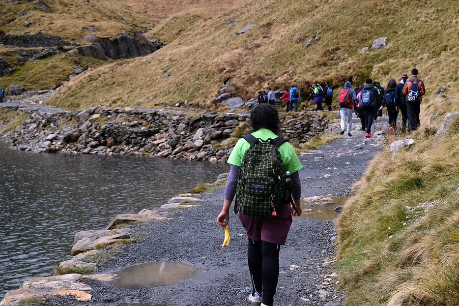

What do we do
InTouch Foundation is a registered charity and is a community based effort to address the plight of homeless men and women on the streets of Yorkshire.
Our dual purpose is to bring attention to this plight and provide an organisation where volunteers can become directly involved in the preparation and feeding of the less fortunate that exist on the edge of our society.
As a not for profit organisation, we are able to accept charitable donations and use them to deliver hot meals and emotional support to those men and women directly on the streets – wherever the need is greatest.
Volunteer with us
The aim of the mobile kitchen is to provide hot food and drinks to people that are either living in poverty or are homeless.
We provides opportunities for the local communities to become actively involved in making a difference in Yorkshire.
Join our street team to help deliver hot food on the streets once a week. You are welcome to informally join us and experience our encounters of helping the vulnerable people in the community.

Intouch Overseas
InTouch Foundation work with stakeholder's to create sustainable means of livelihoods programme and nutrition for vulnerable communities.
We will help families living in poverty establish an enterprise that will help them become financially independent. We will provide financial support to help the community of Kumasi, Ghana establish chicken and cow farms.